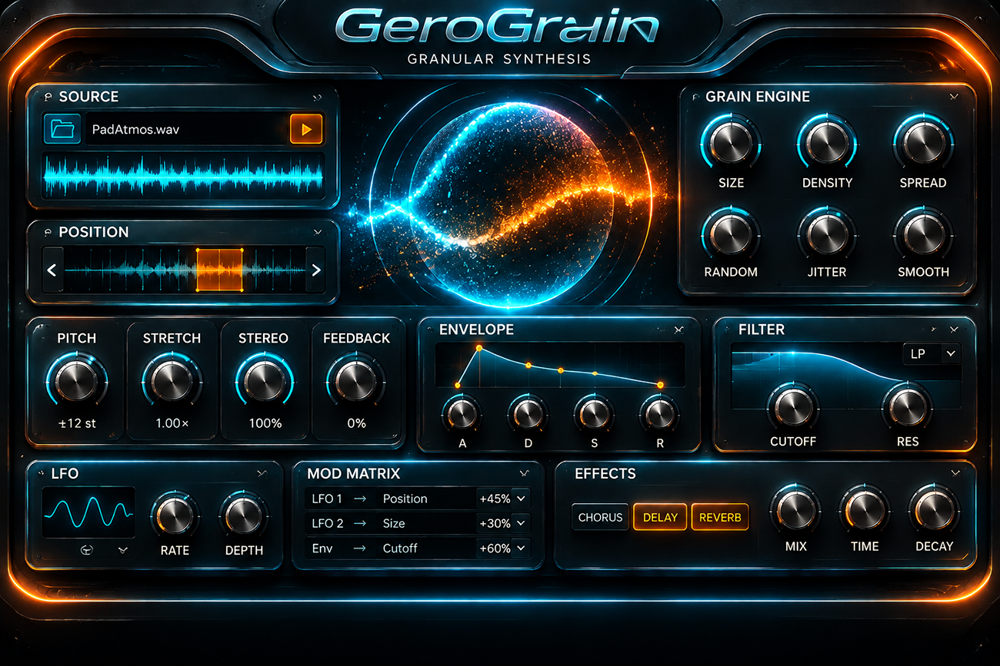

Prototipo interattivo: trascina la manopola verso l’alto o il basso per ruotarla. Doppio clic = posizione centrale.

GRAIN SIZE · 50%
Prototipo interattivo: trascina la manopola verso l’alto o il basso per ruotarla. Doppio clic = posizione centrale.
